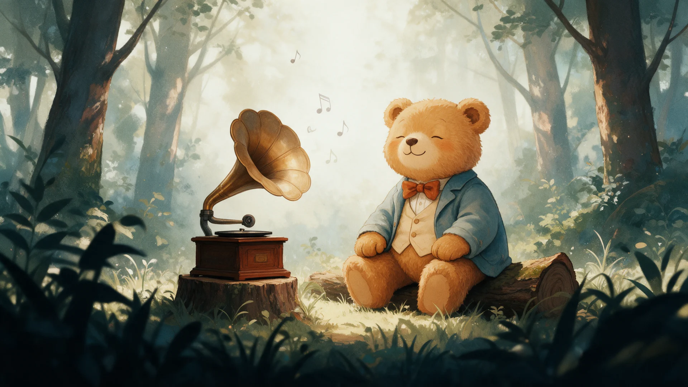
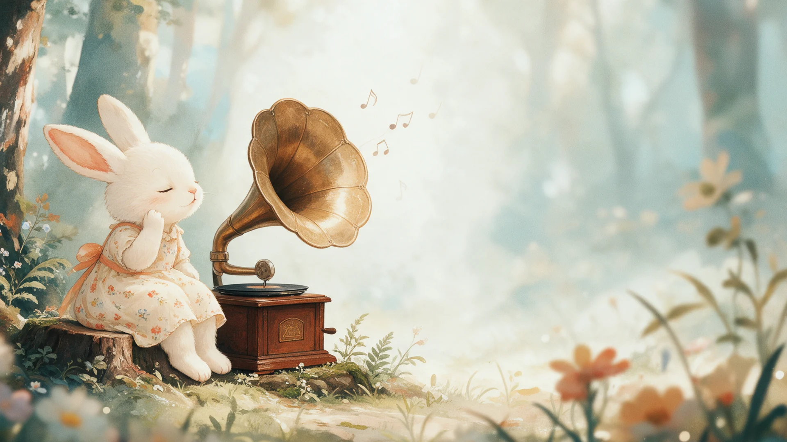
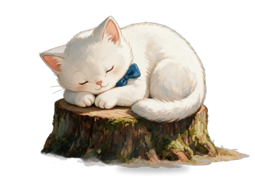
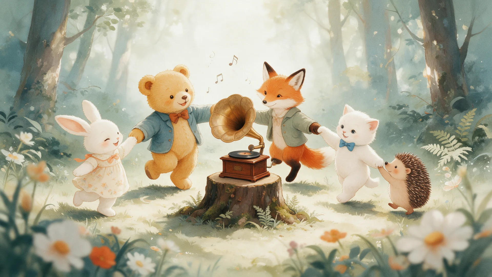
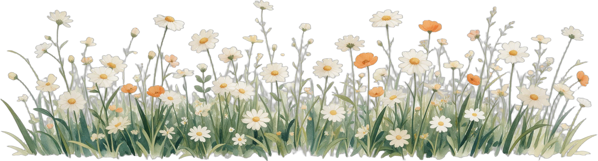
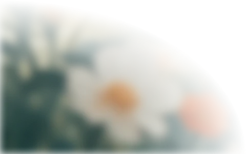
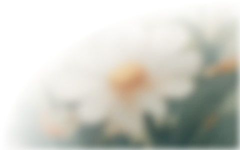

УгаДай меЛоДию
Слушай и угадывай произведения из «Детского альбома» Петра Ильича Чайковского


Как называется это произведение?




Вернуться в менюОтличная работа! Кажется, теперь ты узнаешь произведения Чайковского с первых нот
Все мелодии угаданы!
Угадай мелодию
1 / 6